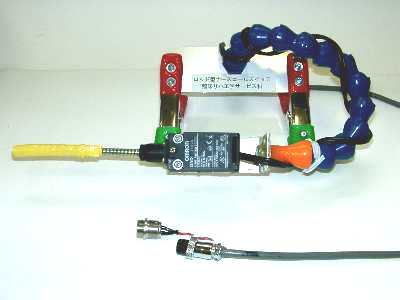
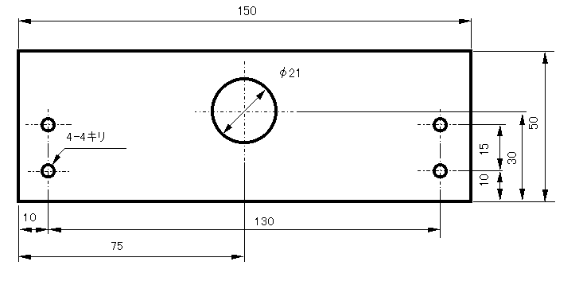
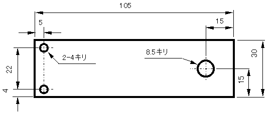
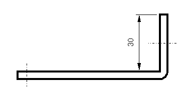
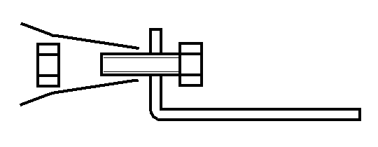
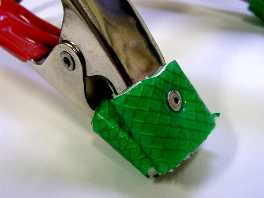
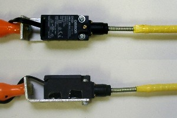
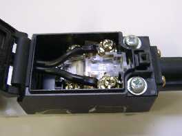
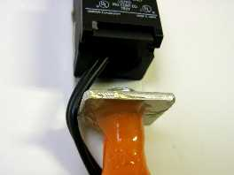
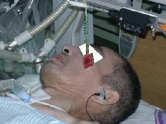

かならずお読みください→
ロッド形ナースコールスイッチ

特徴
上肢や下肢または頭部の粗大な動きがあれば操作可能
センサーの設置や位置の調整が容易，体位交換に対応可能
スイッチの機械的信頼性が高く，安価
材料
オムロン，小型セーフティーリミットスイッチ，形Ｄ４Ｄ―２１８７Ｎ，１個
ダイナミックツール，ロックラインホースキット，ＬＯＣ１３，１個
１／２インチ管用ネジ，1個（ホームセンター，塩ビパイプ売り場，100円以下）
クランプ，２個（ホームセンター，工具売り場，150円以下）
アルミ板Ａ，50X150X4，1枚 （当科ではあり合わせのアルミ板を使いました．）
アルミ板Ｂ，30Ｘ105X4，1枚 （同じです．）
電線，２ｍ．（古いナースコールスイッチの電線を再利用しています．）
ネジ
類，その他（これらはホームセンターで購入しました．）
六角ボルト，M8L40，１個
六角ナット，M8，１個
十字穴付きなべ小ネジ，M4L30，２個
十字穴付きなべ小ネジ，M4L20，４個
平座金，M4，８個
六角ナット，M4，６個
圧着端子，２個 など
工具
金ノコ，ヤスリ，ドリル，万力，プラスドライバ，はんだごて，ハンダなど
作り方
１．アルミ板の加工

アルミ板Ａを上図のように加工します．

アルミ板Ｂを上図のように加工します．

そして９０゜に折り曲げます．角部分をヤスリでなめらかにします．
２．ホースの組み立て
ロックラインホースキットのうち，ここでは，1/2インチPTのフィッティングと3/8インチのノズルチップを使用します．

まず，3/8インチのノズルチップとアルミ板Ｂを図のように，六角ボルト（M8L40）六角ナット（M8）で組み立てます．(さらに改善参照）
このときボルトを強く締めすぎてノズルチップを破損しないように注意してください．
ロックラインホースキットの本体蛇腹部分を組み合わせ，先端にノズルチップを末端に1/2インチPTのフィッティングを取り付けます．（パッケージにコツが書いてあります）
アルミ板Ａの21ｍｍ穴に1/2インチPTのフィッティングを通し，1/2インチ管用ネジで固定します．(さらに改善参照）
アルミ板Ａの４つの４ｍｍ穴にそれぞれクランプをネジ（ボルトM4L20，ナットM4）で取り付けます．なおクランプ先端に標準で付いているカバーは壊れやすいので，水道用メッシュ入り耐圧ホースをかぶせブラインドリベットで固定します．

３．セーフティーリミットスイッチの取り付け

アルミ板Ｂに小型セーフティーリミットスイッチをネジ（ボルトM4L30，ナットM4）で固定します．
４．配線
電線の先端に圧着端子を取り付けます．

小型セーフティーリミットスイッチのふたを開け，内部の端子台にネジ止めします．
（通常短絡の端子と通常開放の端子があるので注意，配線するのは通常開放の端子．写真参照）
電線は，小型セーフティーリミットスイッチの後ろの穴を通して外に出します．

電線は，ロックラインホースキットの側面に巻き付けるように通します．(さらに改善参照）
配線の末端は，ナースコールコネクタに接続し，インチ管用ネジの側面に穴を開け，インシュロックタイで固定します．
さらに改善
アルミ板Ａとロックラインホースキットの固定はゆるみやすいので，接着剤（エポキシ樹脂２液混合型）で固定するとよいです．
アルミ板Ｂとノズルチップは使用しているうちに回転しネジがゆるみやすいので接着剤（同上）で固定するとよいです．
小型セーフティーリミットスイッチの先端は，そのままでは顔や頭部で操作する場合には痛いかもしれません．このようなときはビニルホース（熱帯魚空気ポンプ用など）をはめ込んだり，ビニルテープを巻くなどするとよいです．足の裏で操作するときには痛いくらいでないと位置がわかりにくいそうです．この部分は使用する方の好みにより適宜工夫する必要があります．
ノズルチップから管用ネジまでの配線方法は，２種類考えられます．ノズルチップの側面に開けた穴から，ロックラインホースキットの内部を通すか外側を通すか（写真のとおり）です．前者は見た目にすっきりしますが，内部で電線がよじれたり，ロックラインホースキットのコマを追加や削除するときに手間がかかります．当科では両方作りケースバイケースで使い分けていましたが，内部貫通式では貫通部分での断線が発生したため，今は外側を通す方法のみ採用しています．
予測される危険性
このナースコールスイッチを使用するに際して，ロッド部分で目などを傷つける危険性が予測されます．特に看護，介護者が位置を調整する時と体位交換の時など注意を要します．
下の写真のように，先端部分にビニールチューブやテープを取り付けるなどの対策が必要です．
使い方
上肢前腕，頭，頬，足など，お使いになる方が最も楽に確実に動かせる部位で操作するのが望ましいでしょう．
参考のために当院での使用例の写真をご覧ください．
いずれも上肢で操作されています．これらの写真では，ロッド先端にビニルテープやビニルホースを取り付けています．頭部や頬で操作される方は，感触を保つために堅めの素材を好まれるようです．また足で操作する方は，ロッド先端部が太く大きな形状を好まれるようです．
しかしこれらはあくまでも個人の好みに属する部分ですので，使用される方とよく相談されることをお勧めします．



上の写真，ロッド式ナースコールスイッチから垂らしたタグを口でくわえ込んで鳴らす．これはこの方が考案された方法です．
今回使用した小型セーフティーリミットスイッチは，先端のロッドをどちらの方向へも倒せば動作しますが，ロッドを押し込んでも動作しませんこの点は誤解しやすいので注意が必要でしょう．

どこに取り付けるか？：ベッドの柵やヘッドボードなどに使用する人や看護する人の都合に合わせてつけます．ベッドのリクライニングをすると，これでは不便な場合があります．このときは写真のようなＬ字型の板をマットの下にひき，これに取り付けるとよいでしょう．
また，直接先端のロッドを倒す以外に，ロッドにひもをつけて引いたり，そのひもをベッド上に張り，そのひもを払う動作で操作するような使い方も出来ます．
ひとこと
ナースコールスイッチがいつも見えていないと不安を感じる人もいます．先端の色を薄暗い時にも視認しやすいような色にするなどの工夫もできるでしょう．また操作時のカチンという音も使用者にとって操作の目安（触っただけなのか，操作したのか）になり重要なようです．標準の押しボタン式のナースコールの操作ができる人でも，これを使用すると安心する場合があるようです．何しろ無骨で大きいですから，押しボタンがどこに行ったか探す必要がありません．ご高齢の方にもよい場合があるのでしょうか？洗練されていないデザインにさえ利点はあるようです．
2018/3/19 UTF-8 に変更
03/05/15 公開
研究企画課リハ工学科にもどる